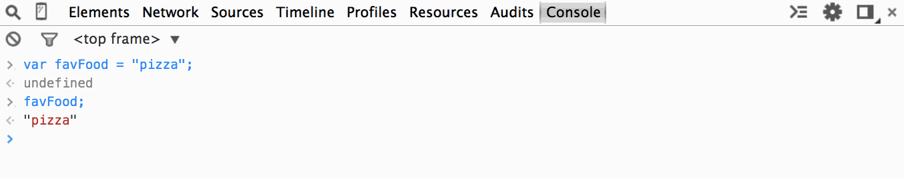
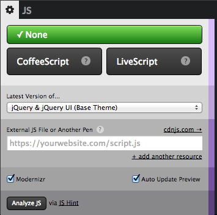
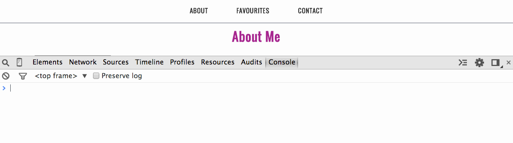
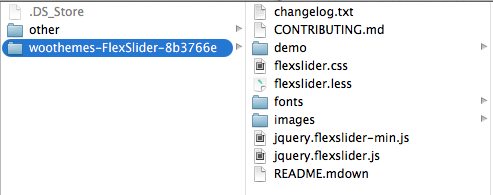
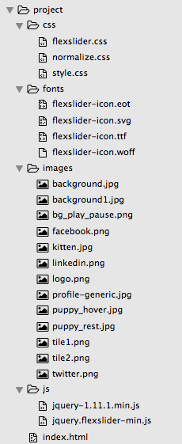

jQuery
pour les débutantes
## Notre projet d'aujourd'hui

Suivez ce [lien](project/final/index.html) pour voir le projet en action !
## On commence !!
Vous aurez besoin :
1. **[Sublime Text](http://www.sublimetext.com)** - est un éditeur de texte qui offre une coloration de certains termes pour faciliter la lecture et la compréhension de votre code. Vous pouvez aussi en essayer d'autres comme: [Notepad++](http://notepad-plus-plus.org/) (Windows), [Atom](https://atom.io/) (Mac) ou [Text Wrangler](http://www.barebones.com/products/textwrangler/) (Mac).
1. **[Google Chrome](https://www.google.com/intl/en-CA/chrome/browser/)** - Choisissez un navigateur moderne qui supporte bien les standards du web et qui possède un bon outil de développement. Pour que Chrome soit votre navigateur par défaut suivez [ces instructions](https://support.google.com/chrome/answer/95417?hl=en). Visitez [browsehappy.com](http://browsehappy.com) pour plus d'infos sur les navigateurs modernes.
1. Le goût de l'aventure!!!
**Bonus:** Sublime est génial pour plusieurs choses dont celle de pouvoir y ajouter des fonctionnalités avec des *plugins* (plugiciel, en (trop) bon français).
[C'est par ici](https://github.com/infn8/LLC-Intro-To-jQuery/blob/master/sublime-text-setup.md) pour apprendre comment ajouter de chouettes fonctionnalités à votre éditeur de code.
HTML, CSS & JavaScript
Le JavaScript sert à manipuler les pages web écrites en HTML et fonctionne aussi avec le CSS.
Le HTML (Hypertext Markup Language) est utilisé pour définir le contenu d'un site.
LeCSS (Cascading Style Sheets) est utilisé pour créer l'apparence d'un site.
Je suis un paragraphe avec du style.
Le JavaScript est un langage de programmation c'est-à-dire une façon de coder pour définir les comportements et les fonctionnalités d'un site web.
Je suis un paragraphe cliquable. Essayez-le !
## Rappel sur le HTML
Le HTML (HyperText Markup Language) est le **contenu** de votre document/page web. En utilisant des `<tags>` (des balises, en bon français) on peut créer des **éléments** pour meubler notre page. Voici quelques exemples:
####Paragraphes
```xml
<p>Paragraph.</p>
<p>Another paragraph.</p>
```
####Listes
```xml
<ul>
<li>Item de liste</li>
<li>Item de liste</li>
<li>Item de liste</li>
</ul>
```
####Images
```xml
<img src="http://www.fillmurray.com/300/300" alt="Placeholder Image">
```
Les balises HTML & navigateurs
En plaçant ces items ensemble sur une page on aura un résultat semblable dans notre navigateur:
Paragraphe.
Un autre paragraphe.
- Item de liste
- Item de liste
- Item de liste

##Rappel sur le CSS
Le CSS (Cascading Style Sheets) définit le *style* soit l'apparence et l'expérience que nous aurons avec notre document HTML. Les **Sélecteurs** sont utilisés pour déterminer sur quels **éléments HTML** le style sera appliqué. Ce style sera exprimé par des règles appelées **déclarations** qui seront composées d'une paire `propriété: valeur` entre accolades `{}`.
```css
selecteur {
propriété: valeur;
}
```
Une **Propriété** détermine le *type* de style appliqué à un élément (ex: couleur). Les **Valeurs** sont spécifiques à la propriété. Les déclarations doivent se terminer par un point-virgule (`;`) pour indiquer que l'instruction est complète.

Les sélecteurs CSS: balises HTML, class & id
Jetons un coup d'oeil aux différentes façons de sélectionner un élément. Pour sélectionner un tag HTML, il faut tout simplement utiliser le nom du tag HTML sans les chevrons.
<div>Sélectionner les éléments div.</div>
Sélectionner tous les éléments div
Pour les classes, l'attribut doit être ajouté au code HTML associé et précédé d'un point dans le CSS.
<div class="special">Sélectionner UN des éléments dans cette classe.</div>
Sélectionner UN des éléments dans cette classe.
Pour un id, l'attribut est aussi ajouté au code HTML, mais est précédé par un dièse. Notez que les ids ne peuvent être utilisés qu'une seule fois par page.
<div id="special">Sélectionner UN des éléments dans cet id.</div>
Sélectionner UN des éléments dans cet id.
Change the values with the students to give them a small hands-on exercise.
## QU'EST JAVASCRIPT?
JavaScript contrôle le **comportement** de votre document. Cela vous permet de faire différentes choses telles qu'animer des items, cacher ou montrer des items, réagir à du contenu mis par l'utilisateur et même de traiter de l'information. Voici ce à quoi JavaScript ressemble :
var myVariable = "Hello World";
function sayHello(){
alert(myVariable);
}
sayHello();
La structure et la syntaxe de JavaScript est plus complexe que HTML et CSS puisque HTML et CSS ne sont pas des langages de programmation à part entière. Ils n'ont pas de **variables**, de **fonctions**, d'**objets** ou encore de **structures de contrôle** comme des déclarations **if** ou des **boucles**, qui sont les principaux blocs de la programmation.
JavaScript possède *tout* cela.
Qu'est jQuery?
jQuery est du JavaScript.
jQuery est un cross-browser de la bibliothèque JavaScript qui est conçu pour simplifier votre programme. Même s'il a sa propre syntaxe, il reste du JavaScript en son noyau. Il est donc important d'avoir une compréhension des principes traditionnels de JavaScript.
Avant d'aller dans les petits détails de ces principes de JavaScript, jetons un coup d'oeil au l'outil console.
It might be a good idea to explain that unlike HTML & CSS, it takes a lot more to see results in JS. Though it might be hard to see the bigger picture at first, it's important to learn how all the different pieces work and learn the syntax. A lot of the upcoming exercises will be focused on getting used to writing programs in general and getting used to the syntax.
## La Console
La console est un outil interactif, construit dans le navigateur. Nous pouvons l'utiliser pour entrer des commandes et interagir directement avec une page web, entrer une information de diagnostic et vérifier s'il y a des erreurs. Nous l'utiliserons ajourd'hui pour écrire du code JavaScript. La console dans Chrome ressemble à ceci:

**Remarquez le symbole ```>```.** Il est utilisé par la console pour représenter un espace pour que vous puissiez entrer vos données sans qu'il ne soit nécessaire de le taper.
Accéder à la Console
Dans Chrome, il y a plusieurs façons d'accéder à la Console.
Use the keyboard shortcut:
COMMAND + OPTION + J (MAC)
CONTROL + SHIFT + J (WINDOWS/LINUX).
OU
Sélectionner: Affichage > Options pour les développeurs > Console JavaScript.
Vous pouvez ouvrir la console quand vous regardez n'importe quelle page HTML. Pour l'instant, utilisons une page HTML vierge, console.html pour avoir commencer à zéro afin de bien pouvoir se pratiquer toute la journée.
Ouvrez console.html maintenant et prenez un moment pour vous pratiquer à ouvrir et fermer la console jusqu'à ce que vous soyez confortable à l'utiliser.
Re-iterate to the class to keep console.html open in a tab to refer back to for the console exercises. A blank document was created rather than opening the console in the slide deck so any errors showing won't confuse the learners and take away from the lesson explaining things not needed for the task at hand.
## Mini-exercice
Expérimentons en tapant quelques données dans la console. Retournez dans **console.html** et ouvrez la console. Après le symbole `>`, écrivez votre nombre préféré et pesez sur la touche de retour/entrée.
Vous devriez voir quelque chose comme ça:

Le symbole ```>``` est utilisé par la console pour représenter un espace pour vos données.
Le symbole ```<``` est utilisé par la console pour montrer la **valeur retournée** de vos données.
Vous pouvez aussi entrer du texte, MAIS faites attention ! Quand vous utilisez du text, soyez sûres de le mettre entre guillemets (il y aura plus d'explication là-dessus bientôt).

La commande que vous mettez dans la console est *évaluée* et une valeur vous est retournée.
Survol de JavaScript
Variables & Fonctions
Let the learners know that these concepts are the building blocks of the language and it's important to understand the syntax, how each concept works and together all of this will be needed to create interactions with JS/jQuery. It may be hard to see the bigger picture at first, we just have to go through the fundamental concepts to understand how to build a program to create different types of interactions.
## Qu'*est* ce qu'une variable?
Une variable est une information de mémoire localisée qui contient quelques informations connues ou inconnues.
**En *français*, s'il vous plaît.**
Les variable sont comme des boîtes ou des récipients. Elles sont utilisées quand il faut y mettre de l'information qui peut être utilisée à n'importe quel moment quand on en a besoin. À sa forme la plus simple, on fait une variable quand nous voulons donner un **nom** à une **valeur**.
Quand nous créons ou *déclarons* une variable, nous devons utiliser le mot-clé `var`, mais vous pouvez nommer la variable comme vous voulez. Finissez la commande avec un point-virgule (`;`) pour que JavaScript sache quand vous avez fini.
Examinons l'exemple ci-dessous.
```javascript
var maVariable = "Bonjour à tous!";
/* | | |
mot-clé | valeur donnée à la variable
|
nom de variable créé par vous
*/
```
Nous prenons la variable ```Bonjour à tous!``` et nous lui donnons le nom ```maVariable```.
Nous référons à ceci comme ayant *assigné* une valeur à une *variable*. Évaluer tout ce qui est à la droite du signe égal et ensuite assigner la valeur à la variable à la gauche.
##Nommer une variable
Les variables ne peuvent contenir d'espaces, alors une convention appelée *camel case* est généralement utilisée. Chaque nouveau mot commence avec une majuscule et le résultat ressemble à des `bossesDeChameau`.
JavaScript est sensible à la casse (majuscule et minuscules sont traitées différemment) alors les noms de variables sont aussi sensibles à la casse.
Utilisez un nom descriptif pour rendre plus facile à reconnaître quel genre de valeur la variable va contenir.
`var prenom;` ← Il est clair qu'un prénom se trouve ici.
`var pn;` ← Pas aussi clair que prénom.
`var x; ` ← Pas clair du tout.
## Types de variables : Chaînes
Quand vous décidez de mettre beaucoup de texte, commes des mots ou des phrases, le type de variable est une chaîne de valeur et doit être contenu dans des guillemets.
```javascript
var maVariable = "Hello World";
```
Vous pouvez *ajouter* des chaînes ensemble pour faire des chaînes plus longues. Ceci est appelé de la concaténation.
```javascript
var premier = "Hello";
var deuxieme = "World";
var phraseComplete = premier + " " + deuxième;
```
Le Javascript ci-haut **enchaîne** les trois éléments séparés ensemble :
1. la variable `premier` avec la valeur `"Hello"`
* la chaîne de valeur **anonyme** `" "` pour ajouter de l'espace.
* la variable `deuxieme` avec la valeur `"World"`
Alors le résultat de cette variable `phraseComplete` est:
var phraseComplete = premier + " " + deuxieme;
= "Hello" + " " + "World"
= "Hello World"
Exercice
Créez une variable appeléefavFood et donnez-y une valeur. Quelle est la syntaxe pour créer une valeur et lui assigner une chaîne de valeur?
var favFood = "pizza";
Essayez d'ajouter le code ci-haut dans la console sur console.html. Qu'est ce que cela vous retourne? undefined
C'est tout à fait normal. N'oubliez pas, les variables sont utilisées pour contenir des valeurs jusqu'à ce que vous soyez prêts à les utiliser. favFood continue d'être associée à la valeur initiale donc elle ne retourne rien (undefined). Pour le moment, JavaScript ne sait pas que vous avez associé une valeur à la variable. Pour utiliser la variable, tapez simplement favFood dans la console. Ceci retournera la valeur qu'elle contenait.

Exercice (suite)
Essayons de faire un enchaînement de lignes avec la variable favFood. Dans la console, essayez de taper cette commande:
"Mon plat favori est " + favFood;

Notez que quand nous exécutons une commande sans var, la valeur assignée de la variable nous est retournée plutôt que undefined. Rappelez-vous que var est utilisée comme déclaration et créée une variable qui elle retiendra la valeur que vous lui avez donné, jusqu'à son utilisation.
Défi! Comment ajouteriez-vous un point à la fin de cette phrase?
Give some real world of examples of why or how variables can be used. Ex. form values can be used to create shipping labels.
## Types de variable: Enchaînements de lignes et citations
JavaScript analyse les enchaînements de lignes comme des valeurs qui sont attachées l'une à l'autre dans des 'citations uniques' ou des 'citations doubles'. Vous pouvez utiliser le style que vous voulez, mais vous devez commencer et finir une ligne avec la même marque.
```javascript
var fonctionnelle = "This string value's the bomb!!!";
var non fonctionnelle = 'This string value's the bomb!!!';
```
```javascript
/* ^ ^
|_________________|
|
Dans cet exemple, Javascript pense que la ligne finit à la deuxième apostrophe.
Javascript s'attend à ce que la commande finisse avec un point-virgule (;)
et retournera une erreur.
*/
```
```
var aussifonctionelle = "Then I said: 'That string value was the bomb!!!' ";
var aussinonfonctionnelle = "Then I said: "That string value was the bomb!!!" ";
```
Essayez de copier chacune des lignes et de les mettre dans votre console pour voir les erreurs.
## Types de variable: Enchaînements de lignes et citations
Pour essayer de mieux comprendre les situations rencontrées dans la dernière diapositive, vous pouvez mettre une barre oblique (`\`) en face de la citation pour *échapper* la citation pour qu'elle ne finit pas la ligne.
```javascript
var totallyWorks = "Then I said, \"No way you can do that!!!\" ";
/* ^ ^
| |
|___________________________________________|
|
JavaScript reconnaît maintenant la ligne qui commence et finit avec un même symbole.
La variable 'totallyWorks' a la ligne de valeur assignée ci-dessous:
Then I said, "No way you can do that!!!"
*/
```
Une autre option est d'utiliser des citations uniques pour isoler la ligne au complet.
```javascript
var alsoWorks = 'Then I said, "Yes you can!!!" ';
```
## Types de variable: Nombres
Les **valeurs** de Variable peuvent être de plusieurs différents **types**. Le plus basique est le **nombre**.
var meaningOfLife = 42; // Les nombres complets sont appelés des 'entiers' ('integers' en anglais)
Javascript peut aussi faire des maths. Utilisez `+` pour une addition, `-` pour une soustraction, `*` pour une multiplication et `/` pour une division.
```javascript
var endingValue = 5 * 2;
// Ceci retournera une valeur de 10.
```
Ces calculs fonctionnent de la même façon que ce soit des valeurs de nombres, ou des valeurs associées à une variable :
```javascript
var ValeurOriginale = 5;
var multiplicateur = 2;
var endingValue = ValeurOriginale * multiplicateur;
// 'endingValue' est encore 10.
```
## Exercice
Pratiquons en utilisant des nombres & des opérateurs arithmétiques.
`+` pour 'addition, `-` pour la soustraction, `*` pour la multiplication et `/` pour la division.

Maintenant, essayez d'utiliser ces opérateurs avec des variables. Créons un programme qui peut calculer l'âge d'une personne. Créez deux variables, une pour `currentYear` et l'autre pour `birthYear` et soustrayez ces valeurs.

## Exercice (5-10 mins)
Créez un programme qui utilise les concepts que nous avons couverts jusqu'à maintenant: les variables & les opérateurs arithmétiques.
Combien de secondes y a-t-il par jour?
* Créez la variable pour `secondsPerMinute`, `minutesPerHour` et `hoursPerDay`.
* Utilisez ces valeurs pour calculer `secondsPerDay`.
Soyez à l'aise d'utiliser vos propres noms de variables ou abréviations, Soyez juste sûres d'utiliser les meilleures pratiques pour nommer des variables.
**Défi additionnel!**
Utilisez des enchaînements pour obtenir comme résultat final: "There are x seconds per day."
(Allez à la prochaine diapositive pour voir la solution.)
## Exercise Solution

```javascript
var secondsPerMinute = 60;
var minutesPerHour = 60;
var hoursPerDay = 24;
var secondsPerDay = secondsPerMinute * minutesPerHour * hoursPerDay;
// Cette commande devra sortir la valeur de secondsPerDay
secondsPerDay;
// Enchaîner les lignes avec la variable secondsPerDay.
var sentence = "There are " + secondsPerDay + " seconds per day.";
// Cette commande sortira la valeur de cette phrase.
sentence;
```
## Types de variables: Booleans
Les variables qui contiennent une valeur `true` or `false` sont appelées **booléen ** (**booleans** en anglais).
```javascript
var dixEstPlusGrandQueZero = true;
var deuxEstPlusPetitQueUn = false;
```
## Types de variables: Arrays
Les variables peuvent aussi retenir une *liste* de valeurs (les valeurs étant elles-même des **types** comme des enchaînements, des nombres ou des booleans) dans ce qu'est un **array**. Notez la syntaxe; la valeur de l'array doit être contenue dans des crochets `[ ]`, avec chacune des valeurs séparées par une virgule *sauf* la dernière valeur.
```javascript
// Déclarer l'array et les valeurs assignées.
var myFavoriteThings = [ "Raindrops On Roses", "Whiskers On Kittens" ];
```
Vous pouvez aussi écrire chacune des valeurs sur sa propre ligne pour la lecture. JavaScript ignorera le saut de ligne.
```javascript
// Déclarer l'array et les valeurs assignées.
var myFavoriteThings = [
"Raindrops On Roses",
"Whiskers On Kittens"
];
```
##Valeurs d'array
Pour accéder à la valeur d'une variable, utilisez le nom de la variable. Pour les **arrays**, les valeurs sont acessibles par leur nom d'*array* et leur **index numérique**, aussi contenu dans des crochets, **commencent à ```0```**. Pour obtenir la valeur du premier item dans un *array*, la syntaxe sera comme suit:
```javascript
myFavoriteThings[0];
```

Imaginez les *arrays* comme un carton d'oeufs. Tous les oeufs sont dans un seul carton, mais chacun à son propre petit espace.
Un moyen alternatif de déclarer et d'assigner des valeurs à un *array* est d'utiliser les crochets avec un index numérique. Ceci devrait donner le même résultat que ci-haut.
```javascript
// Déclarer un array vide.
var myFavoriteThings = [];
// Assigner des valeurs à un array.
myFavoriteThings[0] = "Raindrops On Roses";
myFavoriteThings[1] = "Whiskers On Kittens";
```
## Types de variables: Objets
Un autre type de variable qui peut contenir plusieurs valeurs et types es un **objet**. Pour déclarer un objet, utilisez les accolades `{}`. Les valeurs sont écrites en nom de propriétés et de valeurs ainsi :
```javascript
var myObject = {
NomdePropriété: PropriétédeValeurs,
AutreNomdePropriété: AutrePropriétédeValeurs
}
```
Vous pouvez même utiliser un *array* comme propriété de valeurs.
```javascript
var FamillevonTrapp = {
père : "Captain Georg von Trapp",
belle-mère : "Maria von Trapp",
enfants : [
"Liesl von Trapp",
"Friedrich von Trapp",
"Louisa von Trapp",
"Brigitta von Trapp",
"Marta von Trapp",
"Gretl von Trapp"
]
};
```
Dans l'exemple ci-haut, l'objet à 3 **propriétés**: ```père, mère & enfants```.
Remarquez comment nous utilisons les accolades ```{ }``` pour dénoter un objet et comment nous utilisons les crochets ```[ ]``` pour les *array*.
## Types de varaibles: Objets (Suite)
```javascript
var vonTrappFamily = {
père: "Captain Georg von Trapp", //La valeur de la propriété 'père' est un enchaînement de texte.
belle-mère : "Maria von Trapp", //La valeur de la propriété 'belle-mère' est un enchaînement de texte.
enfants : [ //La valeur de la propriété 'enfants' est un array d'items.
"Liesl von Trapp", //Chaque item de l'array est un enchaînement de texte.
"Friedrich von Trapp",
"Louisa von Trapp",
"Brigitta von Trapp",
"Marta von Trapp",
"Gretl von Trapp"
]
};
```
Le pattern d'un objet est comme suit:
```javascript
var variableName = { propertyName : propertyValue, anotherPropertyName : another Value };
/* | | | | | | | |
| | | | | |_________________| Le crochet
| | | | | | ferme l'objet
| | | | | Ceci peut être répéter
| | | | | pour autant de propriétés désirées.
| | | | └ Une virgule (,) sépare les propriétés
| | | └ La valeur de la propriété suit les deux points
| | └ Deux points (:) sont utilisés pour séparer le nom d'une valeur
| └ Le nom de propriété doit commencer avec une lettre et ne contient pas d'espace
└ Le crochet commence l'objet.
*/
```
## Type de variable: Évaluer un objet
Les valeurs d'objet sont évaluées ou prennent forme via une syntaxe appellée **dot notation**. Pour accéder à la propriété `père`, voici de quoi ça aurait l'air:
```javascript
vonTrappFamily.père = "Captain Georg von Trapp";
```
Pour avoir la valeur d'un des enfants en accédant à une valeur d'array à l'intérieur d'une propriété d'objet, voici ce que ça aurait l'air :
```javascript
var notAllowedChampagne = vonTrappFamily.children[0];
```
Ceci donnerait une valeur à la variable ```notAllowedChampagne``` à l'enchaînement de valeur du premier enfant de l'array, ```Liesl von Trapp```. (Rappelez-vous, l'index numérique d'array commence toujours à 0!)
**Les variables qui sont dans un objet sont appellées ```propriétés```.** Elles sont toujour des variables, mais quand elles sont contenues dans un objet, elles sont référées comme étant des **propriétés**.
#Exercice: Objets
Utilisant les objets ci-dessous, ajoutons ce bloc de code dans notre console et pratiquons les différentes valeurs de propriétés.
```javascript
var vonTrappFamily = {
père : "Captain Georg von Trapp",
belle-mère : "Maria von Trapp",
enfants : [
"Liesl von Trapp",
"Friedrich von Trapp",
"Louisa von Trapp",
"Brigitta von Trapp",
"Marta von Trapp",
"Gretl von Trapp"
]
};
```
## Types de Variable
Comme vous avez vu, il y a *plusieurs* différents types de variable dans JavaScript et plusieurs règles sur comment les écrire.
Ceci prendra de la pratique pour s'y habituer, mais il est important de comprendre les variables qui sont utilisées pour retenir les valeurs. Les valeurs elle-mêmes ont différents types.
## D'accord, maintenant quoi?
Nous nous sommes pratiquées à écrire des lignes de JavaScript. Ces lignes peuvent être maintenant utilisées pour écrire des logiciels qui ne sont que des séries de commandes qu'un ordinateur doit suivre. Maintenant... nous écrivons du code.
### Quel code?
Cela dépend. Que voulez-vous que votre **logiciel** fasse? Regardons [cet exemple](framework/example-menu.html). En utilisant JavaScript, nous écrivons, étape par étape les instructions sur comment faire les choses suivantes :
* Soyez attentives aux liens sur le menu principal d'une page.
* À chaque fois que quelqu'un passe sa souris sur un de ces items, une ligne se déplace pour surligner l'item sur lequel nous sommes passées.
* Quand la souris quitte l'item, la ligne se replace à l'endroit où elle était.
Cet exemple illustre une courte série de commandes. Quand une série de commande est répétitive, plutôt que d'écrire la même ligne de code plusieurs fois dans notre logiciel, nous pouvons créer une `fonction`.
## Fonctions
Si une `variable` est un nom pour une valeur, alors une `fonction` est un nom pour un **set** de commandes ou d'instructions. Quand nous invoquons une variable, elle retourne une valeur. Quand nous invoquons une fonction, elle exécute toutes les commandes contenues à l'intérieur d'elle, aidant le code ainsi à "faire des actions"
Analysons les deux fonctions suivantes, `alert()` and `prompt()`. Celle-ci sont construites dans JavaScript dès le début !
Retournez dans votre console et écrivez les deux fonctions dedans, une à la fois, et regardez ce qui se passe. Notez la syntaxe pour fonction, les parenthèses `()`, doivent être inclues.
##Fonctions et Arguments
Nous venons de voir que les fonctions `alert()` et `prompt()` créent un pop-up dans le navigateur, mais le pop-up est vide. Nous pouvons aussi *passer* un **argument** *dans* ces fonctions en ajoutant une valeur dans les parenthèses`()`. Essayez ceci dans la console:
```javascript
alert("Hello!");
```
```javascript
prompt("What day is it today?");
```
Peu importe la valeur qu'il y a dans les parenthèses, celle-ci sera passée dans la fonction.

## Faites vos propres fonctions!
Vous povuez créer vos propres fonctions qui peuvent contenir n'importe quelle instructions dont vous nécessitez, incluant d'autres fonctions. Utilisez le mot-clé `fonction` pour créer une nouvelle fonction.
Jetons un coup d'oeil à cet exemple:
```javascript
function sayAnything(){
alert("Hello World");
}
```
Dans l'exemple ci-haut, une nouvelle fonction`sayHello` est créé, mais comme les variables, rien ne se passera tant et aussi longtemps que la fonction n'est pas **appelée**.
Nous avons déjà pratiqué le fait d'appeler une fonction. Vous vous rappelez de `alert();` et `prompt();`? Appelez simplement cette fonction en utilisant le nom de la fonction plus les parenthèses`()`. Ajoutons la déclaration de fonction ci-dessus dans la console et exécutons la en l'appelant.

##Fonctions, Arguments & Paramètres
Les fonctions peuvent être utilisées pour rendre vos vies BEAUCOUP plus facile une fois que vous êtes habituées à les écrire. Une fonction doit être utilisé lorsque vous avez quelque chose que vous devez faire plusieurs fois dans votre projet.
Comme une fonction déjà construite, vous pouvez passer des *arguments* dans vos fonctions aussi..
Regardons à nouveau cette fonction du précédent exemple.
```javascript
function sayAnything(){
alert("Hello World");
}
```
Remarquez que la fonction ```sayAnything()``` a des parenthèses vides `()` alors que la fonction ```alert()``` a l'**enchaînement** de valeurs "Hello World" entre parenthèses `()`.
Nous pouvons créer un **paramètre** pour passer un argument dans cette fonction.
## Créer des fonctions avec des paramètres
Les **paramètres** sont de l'information qui est passée dans une fonction comme des variables.
Au lieu de dire "Hello World" chaque fois que vous appelez une fonction, vous voulez peut-être dire quelque chose de différent chaque fois que vous l'appelez. Voyons voir de quoi ceci aura l'air:
```javascript
// Déclarer une fonction avec un paramètre de 'message'
function sayAnything(message){
alert(message);
}
// Appelez la fonction
sayAnything("Welcome to the LLC jQuery workshop!");
```
Maintenant, quand nous appelons la fonction, nous pouvons passer un argument dans les parenthèses(`"Welcome to the LLC jQuery workshop!"`). Cet argument devient la valeur de `message` qui maintenant remplira `message` dans `alert(message)`.
Essayons le tout dans la console. Premièrement, ajoutez la fonction et appelez la. Vous pouvez appeler la fonction autant de fois que désiré avec différents arguments.

##Paramètres multiples
JavaScript permet plusieurs paramètres. Quand vous appelez la fonction, ajoutez les valeurs dans le même ordre que les paramètres déclarés dans la fonction.
```javascript
function maPropreFonction(parametre1, parametre2, parametreN) {
/* | | | |
| | | └ Vous pouvez avoir autant de paramètres que vous voulez.
| | └ Le second paramètre de la fonction.
| └ Le premier paramètre de la fonction.
└ Le nom de votre fonction.
*/
}
// Appelez la fonction avec des arguments dans le même ordre.
maPropreFonction(parametre1, parametre2, parametreN);
```
##Objets, Fonctions et Méthodes
Quelle est la différence entre ces deux là? Le deuxième a l'air d'une fonction, non ?
``` javascript
alert();
console.log();
```
`alert()` est une **fonction**, elle fonctionne par elle-même.
`log()` est une **méthode** parce qu'elle est rattachée à un **objet**, `console`. Elle pourra rentrer un message (l'argument inscrit dans `log()`) et le montrera seulement dans la console.
Ceci est beaucoup plus facile pour tester et debugger que d'utiliser `alert()`. Plus de pop-ups qui énervent!
##Objets & Méthodes
Presque tout dans JavaScript est un objet. Voici un autre exemple:
```javascript
// array object
var fruits = ["pommes", "oranges", "poires"];
// accéder à la propriété de 'longueur' d'un objet array pour savoir combien il y a de fruits inscrits.
var typesDeFruits = fruits.length;
// Mettez dans la console le nombre d'items et enchaîner les dans une phrase.
console.log("Il y a " + typesDeFruits + " types de fruits.");
```
Essayez ceci dans la console.
Fonctions & jQuery
Une fonction est un des plus puissants outils dans JavaScript et l'une des fonctions les puis puissantes que vous aurez à utiliser est celle-ci:
jQuery();
Rappelez-vous, jQuery est une librairie JavaScript. C'est une librairie de fonctions/méthodes utilisées pour simplifier votre programme. Vous pouvez la télécharger et l'utiliser dans vos projets.
Ouf!

Et voici une courte introduction à JavaScript.
Mais devinez quoi? Vous savez déjà comment utiliser jQuery.
## Utilisation de jQuery
Vous savez comment utiliser jQuery parce que vous savez comment sélectionner des **éléments HTML** avec des **sélecteurs CSS**.
```css
.menu-item { color: blue; }
/* | | |
| | └ La valeur de la propriété CSS.
| └ La propriété CSS.
└ L'élément HTML avec une classe de 'menu-item' est sélectionné.
*/
```
Le même code dans jQuery est fait ainsi:
```javascript
jQuery('.menu-item').css('color', 'blue');
/* ^ ^ ^ ^ ^
| | | | └ Le second paramètre donne la valeur CSS.
| | | |
| | | └ Le premier paramètre donne la propriété CSS.
| | |
| | └ La méthode jQuery 'css' est appelée et changera
| | le CSS de l'élément sélectionné dans l'étape précédente.
| |
| └ L'argument envoyé à la fonction jQuery est un enchaînement de valeurs qui
| prend la forme d'un sélecteur CSS.
|
└ La fonction jQuery. Ceci est super important car il fait fonctionner le reste.
*/
```
## Raccourci: Le signe de dollard.
```javascript
var $ = jQuery;
```
Chaque fois que vous voulez écrire ```jQuery```, utilisez tout simplement ```$``` à la place. Ça sauve du temps et c'est la convention dans la plupart des cas.
```javascript
jQuery('.myClass');
```
est la même chose que:
```
$('.myClass');
```
C'est ce que nous ferons à partir de maintenant.
## Qu'est ce que jQuery peut faire?
* Animer des items.
* Performer des interactions avec vos utilisateurs
* Créer de riches expériences utilisateurs avec des composantes telles que:
* Tabs
* Accordéons
* Des items glissable & déposable (drag and drop)
* Des système de rotation d'images
* Avoir un fond de page différent à chaque fois que la page charge.
* Créer un effet 'infinite scroll' en téléchargeant plus d'items et de contenu une fois qu'un utilisateur atteint le bas de la page.
* Créer des dispositions différentes qui ne sont pas possible avec CSS seul.
* Détecter les capacités d'un navigateur avant de mettre des fonctionnalités telles que des Animations CSS.
La librairie jQuery contient plusieurs fonctions et méthodes déjà incluses. Voyez la documentation ici: [http://api.jquery.com](http://api.jquery.com). [En anglais]
Exemples jQuery:
Voici un exemple d'une seule animation et d'une animation en chaîne (elle fonctionne l'une après l'autre).
See the Pen jQuery Animation Example by Ladies Learning Code (@learningcode) on CodePen.
Jetez un coup d'oeil aux onglets HTML, CSS et JS en plus de l'onglet results.
Vous pouvez rejouez les animations, quand dans l'onglet Results vous passez votre curseur par dessus l'exemple et que vous cliquez sur le bouton "RERUN" dans le coin en bas à droite.
Get the learners to change a couple values so they can see how things change but just give a high level overview about the concepts. They will be discussed in more detail in the next few slides.
Exemples jQuery
Chaque bouton en dessous a eu différentes instructions à suivre une fois qu'il est cliqué.
See the Pen jQuery Event and Method Examples by Ladies Learning Code (@learningcode) on CodePen.
Le HTML consiste de plusieurs éléments <buttons> sur lesquels cliquer et ajouter l'action jQuery. Le <div class="stage"></div> est utilisé comme sélecteur. Le <div class="player"></div> est le carré.
Le CSS fixe la couleur et la taille des carrés et les fait flotter pour qu'ils soient côte à côte.
Le jQuery est où toute la magie opère.
Exemples jQuery
Vous pouvez même accroître les possibililés avec des plugins comme jQuery UI utilisé ci-dessous. Vous pouvez déplacer et ré-organiser les items en utilisant le plugin d'organisation («jQuery UI sortable plugin»).
See the Pen jQuery UI Draggable Sortable Example by Ladies Learning Code (@learningcode) on CodePen.
Lorsque vous éditez dans un Codepen, vous pouver sélectionner l'icône d'engrenage dans la boîte de JS et vous verrez si une librairie est utilisée et de laquelle il s'agit.
Dans l'exemple au dessus, on voit que jQuery et jQuery UI sont utilisées.

##Préparer son environnement de travail
Pour le reste de la journée, vous travaillerez avec les fichiers inclus dans le dossier projet. Prenons un instant pour préparer notre environnement de travail.
Dans le dossier que vous avez téléchargé aujourd'hui (**llc-intro-a-jquery-master**), il y a plusieurs dossiers et fichiers.
llc-intro-a-jquery-master
|-- framework // Contient le nécessaire au diapos de cette présentation. Ne pas éditer!
|-- project // Contiens les fichiers pour l'atelier d'aujourd'hui.
|-- css // Seulement des fichiers CSS ici.
|-- final // Un exemple complet de l'excercice d'aujourd'hui, à titre de référence.
|-- images // Images du projet. Vous pouvez en ajouter ici.
|-- js // Tous les fichiers js vont ici.
|-- index.html // Page d'accueil de votre site.
|-- index-fr.html // Ceci est le fichier que vous consultez présencement (diapos)!
##Préparer son environnement de travail
Ouvrons notre nos fichiers de travail dans un navigateur et un éditeur de texte.
* Ouvrez Sublime Text et aller dans **File > Open**.
* Naviguez dans le dossier **projet** (à l'intérieur du dossier que vous avez téléchargé avec les diapos d'aujourd'hui).
* En sélectionnant tout le dossier, cliquez **Open**.
* Le dossier apparaîtra dans la barre à gauche. Double-cliquez sur **index.html** pour l'ouvrir dans l'éditeur.
* Faites clique-droit dans Sublime et sélectionnez **Open in Browser**. Cette action ouvrira la page HTML dans votre navigateur.
* Si Chrome n'est pas votre navigateur par défaut, allez dans Window/Finder et naviguez dans le dossier **projet**, clique-droit sur **index.html** et choisissez **Open With > Chrome**
Vous devriez voir ceci dans Sublime Text:

Utiliser jQuery
Pour utiliser jQUery dans votre page HTML, vous devrez créer un lien vers le fichier jQuery. Il y a 2 façons possible.
1. Inclure un fichier jQuery avec vos fichiers de projet:
- Téléchargez la dernière version de jQuery et utilisez la dernière, la version compressée.
- Sauvegardez-la avec vos fichers de projet. Il est recommandé de créer un dossier js pour regrouper les fichiers JavaScript (comme il a un dossier pour les images et pour les fichiers CSS.)
- Reliez-la à votre fichier HTML en utilisant une balise script. La source (
src) devrait pointer vers le lieu où est situé votre fichier dans la structude de votre dossier de projet.
Aujourd'hui vous n'aurez pas à le faire puisque nous avons déjà mit le fichier jQuery dans votre dossier de projet pour vous.
<script src="js/jquery-1.11.1.min.js"></script>
Important:
Contrairement au CSS, qui doit toujours être inclus entre les balise <head>, le JavaScript peut être inclus n'importe où dans la page: dans le <head> ou dans le <body>. Souvent, on l'inclus juste avant la fermeture du </body> pour permettre au contenu de la page de charger en premier.
2. Utiliser un CDN:
Les CDNs peuvent offrir une meilleure performance puisqu'ils hébergent jQuery sur des serveurs à travers le monde.
Pour utiliser le CDN de jQuery (le lien est sur la page de téléchargement), indiquez la source directement plutôt que de pointer vers le fichier dans votre répertoire de projet. Soyez certaine d'inclure le "http://" quand vous travaillez localement (sur votre ordinateur).
<script src="http://code.jquery.com/jquery-1.11.0.min.js"></script>
Insérez-le dans votre page index.html, maintenant.
The examples in jQuery's Learning Center uses the script at the bottom so use it this way to be consistent.
Que venons-nous de faire ?
Jetons un oeil.
<script src="js/jquery-1.11.1.min.js"></script>
/* | | | └ La balise fermante 'script'.
| | └ Là où est le fichier JavaScript.
| └ L'attribut 'src' de la balise 'script' qui demande la localisation du fichier source.
|
└ La balise 'script'. En HTML, ceci indique qu'une commande JavaScript sera attendue.
*/
Maintenant, que nous avons lié le fichier jQuery, nous pouvons accéder à toutes les commandes écrites dans ce document et utiliser toutes ses fonctonnalités.
Génail! Ouvrons index.html dans Chrome ou rafraîchissez la page que vous avez déjà ouverte et voyez ce que jQuery fait quand vous l'incluez dans un fichier HTML.
## Remarquez-vous des différences à votre projet?
### Non?
En réalité, la librairie jQuery en elle-même ne FAIT rien. Elle vous donne les outils nécessaire pour faire plein de choses, mais c'est à nous de choisir.
Maintenant que jQuery est dans notre page, nous pouvons utiliser la fonction `$();` qui appelle la vraie magie de jQuery.
On utilise souvent jQuery pour cibler un élément sur la page et ajouter ou changer son comportement.
## Comment sélectionner un élément avec $();
La fonction ```$();``` ne prend qu'un seul paramètre: une string qui contient un sélecteur CSS ou un élément HTML indiquant quel item(s) est sélectionné sur la page.
Dans l'exemple ci-dessous, ceci sélectionnera tous les éléments de liste qui possèdent la classe "even" dans n'importe quelle liste.
```javascript
$("ul li.even");
```
Ceci va sélectionner tous les premiers items avec la classe "slide" à l'intérieur d'un item qui possède un id "rotator".
```javascript
$("#rotator .slide:first");
```
L'élément HTML qui correspond au sélecteur sont ajoutés dans ce qu'on appelle un **wrapped set**. Ce regroupement spécial d'items sont reconnus par jQuery comme les éléments à affecter.
Quand vous roulez une **méthode** jQuery seuls les items du **wrapped set** seront modifiés ou affectés.
Les Méthodes jQuery
La librairie jQuery vient avec de noooooombreuses méthodes. Nous ne pourrons toutes les couvrir aujourd'hui, mais pour voir ce qui est disponible et comment les utiliser allez sur api.jquery.com.
Nous discuterons de quelques méthodes ici et là une fois que nous aurons débuté notre rotateur d'image.
- La méthode
.hide(); cache tous les éléments sélectionnés dans le wrapped set.
- La méthode
.show(); fera apparaître les éléments sélectionnés du wrapped set.
- La méthode
.css(); modifie l'apparences des éléments du wrapped set en passant 2 paramètres.
- La propriété CSS que vous souhaitez éditer
- La valeur de cette propriété
- La méthode
.addClass(); vous permet d'ajouter une classe CSS aux éléments du wrapped set.
## Timing
Le navigateur télécharge toutes les pages web de haut en bas et quand elle voit du javaScript, il l'exécute. S'il vous arrive de voir ceci:
```javascript
$("p.highlight").css("background-color", "yellow");
```
Avant d'ajouter cela:
```xml
<p class="highlight">Ceci est un important paragraphe surligné</p>
```
Le code JavaScript sera exécuté AVANT que le navigateur voir la balise paragraphe. jQuery ne sera pas capable de cibler l'élément et ne pourra donc y ajouter la couleur jaune !
Le Document Ready
$( document ).ready() est un événement. C'est un moment précis quand le navigateur a téléchargé une majeure partie de la page web: c'est-à-dire assez pour voir toutes les balises et les avoir associés avec celles déclarées dans votre code jQuery.
Rouler le même code dans un événement document ready donne ceci:
$(document).ready(function(){
$("p.highlight").css("background-color", "yellow");
});
Document Ready est un concept un peu complexe qui possède une syntaxe plus difficile à mémoriser. Il vous faut savoir seulement qu'il est nécessaire pour faire fonctionner du code jQuery. Apprenez-en davantage ici.
##Commentaires!
Tout comme le HTML et le CSS, vous pouvez laisser des commentaires dans votre code JavaScript/jQuery. Vous en avez déjà vu dans cette présentation. Vous désirez peut-être prendre des notes pour vous (ou d'autres), organiser des blocs de code ou laisser des explications. JavaScript va ignorer vos commentaire sans les exécuter.
// Voici comment laisser une seule ligne de commentaire.
// Vous pouvez laisser plusieurs lignes de commentaire.
// Assurez-vous simplement d'ajouter les doubles barres obliques
// à chaque ligne.
Voici une autre façon de créer un large bloc de texte.
```javascript
/* Voici comment laisser
un commentaire sur plusieurs lignes
quand vous avez beaucoup à dire. */
```
Les commentaires multi-lignes sont géniaux pour «cacher» des blocs de code si vous voulez essayer un truc sans effacer votre ancien code.
Faison enfin quelque chose!!!
Retournons à Sublime et à index.html. Sous la balise jQuery, ajoutez une autre balise script pour y ajouter - enfin - votre propre code.
<script src="js/jquery-1.11.1.min.js"></script>
<script>
</script>
Ajouter le $( document ).ready() comme ceci:
<script src="js/jquery-1.11.1.min.js"></script>
<script>
$(document).ready(function(){
// Ajoutez tout votre code jQuery ici.
});
</script>
Dans la section des favoris, voici 4 images adorables d'un chien.
Ayons du fun avec!
EXERCICE
Le HTML pour la sections des favoris ressemble à ceci:
<section id="favourites" class="favourites container">
<h2>My Favourite Things</h2>
<h3>Here are a few things I really love</h3>
<img class="fav-img" src="images/puppy_rest.jpg">
<img class="fav-img" src="images/puppy_rest.jpg">
<img class="fav-img" src="images/puppy_rest.jpg">
<img class="fav-img" src="images/puppy_rest.jpg">
</section>
Comment pourrait-on les sélectionner avec jQuery?
## Exercice
Changeons la taille des images en utilisant la méthode jQuery `.width()`. Vous pouvez passez un argument de taille entre les parenthèses. Mettez à jour l'objet `.fav-img` en utilisant la **dot notation** pour appliquer la méthode `.width()`.
```javascript
$(document).ready(function(){
$(".fav-img").width(100);
});
```
Savegardez le fichier dans Sublime, allez dans Chrome, rafraîchissez la page. Si vous avez réussi, voici le résultat que vous devriez obtenir:

## Exercice
Pas assez GROS ? Passez comme argument un plus grand nombre.
```javascript
$(document).ready(function(){
$(".fav-img").width(400);
});
```
Voici le résultat que vous devriez obtenir:

##Click Events
Maintenant que vous avez vu qu'il est possible de modifier la taille d'un élément avec jQuery, mais nous aurions aussi pu le faire en CSS.
Essayons un truc que seul le javaScript peut faire: un **click event**.
Comme l'événement document ready, un click event est un moment précis où nous voulons déclancher l'éxécution d'un code. Cependant, sans vouloir que le navigateur l'exécute immédiatement, on souhaite l'effet seulement en réaction à une action (un clic) de l'utilisateur.
Ajouter une fonction à événement déclanché par un utilisateur s'appelle un **event listener**. Le code est présent et attend, aux aguets qu'un événement survienne. Quand l'usager clique finalement sur l'item, le déclanchement est capté et la fonction est exécutée.
Nous passerons au travers d'un exemple ensemble, mais vous pouvez accéder à la documentation par ici: [http://api.jquery.com/click/](http://api.jquery.com/click/)
Click Events
Pour ajouter un event listener sélectionnez une cible, un élément, en jquery.
$(".fav-img");
Puis, ajoutez la méthode .click().
$(".fav-img").click();
Passez un seul paramètre à la méthode click(). Ce paramètre est une fonction. Ajoutez function(){} entre les parenthèses.
$(".fav-img").click(function(){});
À l'intérieur de cette fonction, entre les accolades {}, c'est à cet endroit que nous ajouterons les instructions à suivre lorsque l'image sera cliquée.
$(".fav-img").click(function(){
// Le changement opère lorsque l'image est cliquée.
});
##Tester avec `console.log();`
Testons le click event et assurons-nous que nous avons sélectionner le bon élément. Vous souvenez-vous de `console.log()` ? Cette méthode est très utile pour tester et débugguer.
Tester le click event nous permettra de savoir si cette étape fonctionne avant de passer à la suivante.
```javascript
$(".fav-img").click(function(){
console.log("Ça marche!");
});
```
Rafraîchissez votre page, ouvrez la console dans votre page et cliquez sur une image. Vous devriez voir le message passer dans la méthode `console.log()` comme ça:

##Clique & Cache
Maintenant que le *click event* fonctionne, vous pouvez effacer votre test `console.log` ou le mettre en commentaire. Prochaine étape: prenons le *click event* pour cacher une image. Utilisons `$(this)` comme sélecteur (on le verra plus en détail bientôt).
Puis ajoutons la méthode `.hide()`.
```javascript
$(".fav-img").click(function(){
//console.log("It works!");
$(this).hide();
});
```
Le code ci-dessous prendra l'image cliquée et va **dynamiquement** ajouter du CSS directement sur l'élément HTML. Ce qui sera ajouté sera `style="display:none;"` pour cacher l'élément, même s'il demeure dans le code HTML"
Ajoutons-le à notre projet et **inspectons l'élément** pour voir comment jQuery ajoute ces changements. Vous devriez vous quelque chose comme la captude d'écran ci-dessous, dans votre console.

##Clique & Cache: Ajouter un paramètre.
La **méthode** `hide()` accepte aussi un **paramètre** de durée: combien de temps ça devrait prendre avant que l'effet se produise. Ajoutez un nombre en milisecondes entre les parenthèses.
```javascript
$(".fav-img").click(function(){
$(this).hide(1000);
});
```
Ceci aura pour effet de prendre 1000 milisecondes (1 seconde) pour cacher l'image.
En jQuery, pour spécifier une durée pour une animation vous pouvez utiliser un nombre en milisecondes ou une valeur de type *string* comme "fast" ou "slow" qui signifient respectivement 200 et 600 milisecondes. Si vous ne fournissez pas de valeur jQuery attribuera la valeur de 400 milisecondes par défaut.
Ajoutez-le à votre projet pour le voir en action. Essayez d'expérimenter avec différents nombres et utilisez les mots clés.
##Clique & Événements en chaîne
Et si nous voulions simplement cacher un truc rapidement, puis le remontrer tout de suite. On pourrait **chaîner** nos méthodes.
```javascript
$(".fav-img").click(function(){
$(this).hide(1000).show('fast');
});
```
Les méthodes jQuery sont chaînées par un point (.) entre elles. L'exemple ci-dessous fonctionne parfaitement même s'il est ridiculement simple. Il faut bien avoir du plaisir à expérimenter !
```javascript
$(".fav-img").click(function(){
$(this).hide(1000).show('fast').fadeOut('slow').fadeIn(5000).slideUp(800).slideDown(10000);
});
```
Ajoutons-le à notre projet pour voir comment ça réagit.
## Mais qu'est-ce que c'est : ```$(this)```?!?!
Pourquoi avons-nous utilisé `$(this)` comme sélecteur dans l'exercice précédent? Qu'est-ce que c'est ? Qu'est-ce que ça fait ?
### Bonne question!
jQuery nous aide en nous donnant une super variable appelée ```this```. Lorsque nous voulons sélectionner une image nous voulons sélectionner **seulement cette image précise** lorsqu'elle sera cliquée. L'exemple ci-dessous identifierait toutes les images ciblées et les cacherait en réaction au clic.
```javascript
$(".fav-img").click(function(){
$(".fav-img").hide(1000);
});
```
`$(".fav-img").click()` Va rechercher *n'importe quelle* image cliquée.
`$(".fav-img").hide(1000);` Va ajouter l'effet *caché* à **tous** les éléments associés.
Le code ci-dessous s'assure que seul l'élément cliqué sera affecté par l'effet qui lui a été appliqué.
```javascript
$(".fav-img").click(function(){
$(this).hide(1000);
});
```
`$(".fav-img").click()` Va rechercher *n'importe quelle* image cliquée.
`$(this).hide(1000);` a ajouter l'effet *caché* en réaction au clic, seulement sur l'élément ciblé. Ainsi, seul l'élément ciblé sera caché.
##Exercice: Un menu actif !
Utilisons maintenant les méthodes jQuery `click()`, `addClass()` et `removeClass()` pour créer une classe `.active` pour styler les différents items du menu lorsqu'ils seront cliqués. Voici les étapes à suivre en jQuery:
1. Sélectionnez les items qui seront cliqués.
1. Ajoutez une classe "active" pour appeler un nouveau style.
1. Ajoutez une classe "active" ainsi qu'un style particulier à votre fichier CSS.
1. Faites en sorte qu'au clic de l'utilisateur sur un élément du menu la classe "active" soit ajoutée, puis faites en sorte que les éléments non-cliqués ne possèdent pas la classe "active".
Débutons !
Exercice: Un menu actif ! - Click Event
Sélectionnez les éléments qui seront cliqués. Voici à quoi votre HTML devrait ressembler:
<ul class="menu">
<li><a href="#about">About</a></li>
<li><a href="#favourites">Favourites</a></li>
<li><a href="#contact">Contact</a></li>
</ul>
Quel sélecteur devrions-nous utiliser?
$(".menu a")
Appliquez la méthode .click()
$(".menu a").click();
Puis, passez un seul paramètre à la méthode click(). Souvenez-vous que ce paramètre est lui-même une fonction. Ajoutez function(){} entre les parenthèses.
$(".menu a").click(function(){});
Testez en cliquant. Avons-nous le bon élément ? Voyez dans la console si le message y est.
$(".menu a").click(function(){
console.log("It works!");
});
Exercice: Un menu actif ! - la méthode addClass()
Génial! Ça marche ! Maintenant, ajoutons la méthode addClass.
$(".menu a").click(function(){
//console.log("It works!");
$(this).addClass("active");
});
Quoi ? Il ne s'est rien passé ?
C'est parce que vous n'avez pas ajouté le style dans le fichier CSS encore. Vous pouvez toujours vérifier s'il a été ajouté au HTML. Si votre console est toujours ouverte, cliquez simplement sur l'onglet “Elements”.

Maintenant, allez dans style.css pour créer un nouveau style CSS pour l'état actif. C'est ce qui changera la couleur (mais vous pouvez ajouter le style qui vous plaît). Puisque la couleur a été ajoutée à .menu a, créez un sélecteur utilisant la nouvelles classe active.
.menu a.active {
color: #A8258D;
}
Maintenant, testez votre page à nouveau.
##Exercice: Un menu actif ! - la méthode addClass()
On y arrive. Nous avons été capable d'ajouter une classe à l'item cliqué, mais nous savons que nous devons enlever ladite classe aux item inactifs. Souvenez-vous, JavaScript/jQuery exécute les commandes de haut en bas. Une façon de régler notre problème serait d'enlever la classe **en premier**, **puis** d'ajouter la classe à l'item cliqué.
Dans ce cas, nous n'utiliserons pas le sélecteur `$(this)` puisque nous recherchons n'importe quel élément avec la classe `active` pour la lui enlever. Ce qui signifique que notre `.active` sera notre sélecteur.
```javascript
$(".menu a").click(function(){
//console.log("It works!");
$(".active").removeClass("active");
$(this).addClass("active");
});
```
Essayons-le maintenant !
**Note**: si la classe `active` déjà est utilisée ailleurs, elle sera affectée aussi. Une autre option serait d'utiliser un sélecteur plus spécifique au menu comme `$(".menu a.active")`.
##Exercice: Personnalisation de votre page (15-20mins)
Maintenant que vous avez eu la chance de pratiquer un peu avec JavaScript & jQuery, prenez du temps pour personnaliser votre page. Voici quelques suggestions:
1. Modifiez l'entête.
2. Ajouter une photo de profil.
3. Modifiez les images.
**Bonus**
1. Préparez-vous pour le prochain excercice. Nous créerons un rotateur d'images. Trouvez 4 images et ajutez-les simplement à votre dossier image pour l'instant. Vous n'avez pas à les ajouter à votre page HTML tout de suite.
2. Modifiez l'image d'arrière plan de l'entête.
Vous n'avez pas d'images sous la main ? Voici quelques ressources:
Sites d'images de substitution :
* http://placehold.it
* http://placesheen.com/
* http://placebear.com
* http://fillmurray.com/
* http://placekitten.com/
* [Plusieurs autres par ici ](http://www.hanselman.com/blog/TheInternetsBestPlaceholderImageSitesForWebDevelopment.aspx)!
Sites d'images gratuites à utiliser:
* http://superfamous.com/
* http://www.gratisography.com/
* http://littlevisuals.co/
* http://nos.twnsnd.co/
* http://unsplash.com/
# jQuery Plugins - Les Plugiciels !
## Les plugins jQuery
jQuery est une librairie qui regorge de possibilité en elle-même. Elle vient avec des centaines de **méthodes**, plusieurs autres **propriétés** aidantes et la possibilité de sélectionner des items comme on le fait avec la syntaxe du CSS.
### Mais jQuery ne peut pas tout faire.
Il semble impossible d'écrire une librairie qui contiendrait toutes les méthoses et qui fonctionnerait selon les critères de tous. Même si c'était possible, la librairie serait si lourde qu'il prendrait un temps fou au navigateur pour la télécharger et les sites seraient *très très lents*.
### Un Plugins
Un plugin jQuery est du code que *quelqu'un d'autre* a écrit pour que vous puissiez l'utiliser dans l'atteinte d'un certain but qui vous aurait été inatteignable si vous aviez voulu l'écrire seulement avec du jQuery de base.
## Les plugins jQuery
Quelques exemples de plugins jQuery:
* [Scroll Magic](http://janpaepke.github.io/ScrollMagic/)
* Un plugin pour rendre facile les effets basés sur le scroll d'un utilisateur
* [ToolTipster](http://iamceege.github.io/tooltipster/#demos)
* Custom pretty Tool Tips
* [jQuery UI](http://jqueryui.com/themeroller/)
* Une collection de widgets de UI destinés à faciliter les interactions complexes entre l'usager et certaines fonctions. Il est aussi très malléable.
* Ce plugin a été développé par l'équipe de jQuery
* **UI = User Interface**
* [FlexSlider](http://flexslider.woothemes.com/)
* un carrousel photo *responsive*
Nous utiliserons le plugin FlexSlider aujourd'hui pour ajouter un carousel d'images à notre projet.
## Donc, qu'est-ce qu'un rotateur d'images ?
À sa plus simple expression un rotateur est une liste d'images qui utilise JavaScript pour montrer une image à la fois, puis la suivante, puis la suivante... Le HTML aurait normalement l'air de ça:
```xml
<div id="rotator">
<ul class="slides">
<li><img src="img/rotator/image1.jpg" alt="First Slide"></li>
<li><img src="img/rotator/image2.jpg" alt="Second Slide"></li>
<li><img src="img/rotator/image3.jpg" alt="Third Slide"></li>
</ul>
</div>
```
Le javascript montre la première et cache le reste. Puis, après quelques secondes elle montre la seconde et cache le reste. Il en est ainsi jusqu'à ce que toutes les images ait été montrées et il repart depuis le début.
Le Flexslider
Le Flexslider est un rotateur jQuery très performant et bien entretenu. Le comble c'est qu'il est gratuit et facile à utiliser !
Dirigeons-nous vers http://www.woothemes.com/flexslider/ pour télécharger le fichier.
Cliquez sur le gros bouton vert pour télécharger le fichier zip. Inclus dans ce téléchargement vous trouverez plusieurs autres fichiers nécessaires au bon fonctionnement du plugin ainsi que d'autres dédiés uniquement à des fins de démonstrations. Vous verez quelque chose comme ceci:

Voici les fichiers que vous devez copier dans votre dossier projet, dans la bonne filière.
- Le dossier fonts en entier dans le dossier project
- flexslider.css dans le dossier css
- images > bg_play_pause.png va dans le dossier project > images
- jquery.flexslider-min.js va dans le dossier project > js
Votre dosser de projet devrait maintenant avoir l'air de ceci:

Vos fichiers d'images peuvent varier, mais assurez-vous que bg_play_pause.png soit inclus.
As you start this slide, tell the mentors to help to make sure all the learners are complete this step before moving on. Explain that people may vary on how they create their folder structures but that it's import to understand how to link to the proper directory folders.
Ajouter le Flexslider à son projet: Étape 1
Maintenant que les fichiers pertinents du plugin sont sauvegardés dans votre répertoire, reliez-les à votre page HTML.
Retournez à votre fichier index.html et ajoutez le fichier de Flexslider (jquery.flexslider-min.js) après la librairie jQuery (jquery-1.11.1.min.js).
<script src="js/jquery-1.11.1.min.js"></script>
<script src="js/jquery.flexslider-min.js"></script>
<script>
$(document).ready(function(){
// Add all jQuery code here.
});
</script>
FlexSlider vient aussi avec son propre fichier CSS. Soyez certaines de l'inclure dans la section <head> avant style.css.
<head>
<title>Page Title</title>
<link href='http://fonts.googleapis.com/css?family=Oswald' rel='stylesheet' type='text/css'>
<link rel="stylesheet" href="css/normalize.css">
<link rel="stylesheet" href="css/flexslider.css">
<link rel="stylesheet" href="css/style.css">
</head>
Note: il s'agit d'une manière d'organiser votre répertoire. Certaines préfèrent créer un dossier plugins pour y mettre ces types de fichiers. Soyez seulement certaines que les liens (path) vers vos fichiers js, images et styles sont bien écrits.
##Ajouter le Flexslider à son projet: Étape 2
Maintenant, écrivons le HTML pour créer la structure du slider. Dans la documentation du Flexslider, le code est fourni. Il est important d'utiliser la même structure avec les mêmes classes ou id parce que la plus part du temps ils sont utilisés à des fins spécifiques dans le code.
Vous pouvez biensûr mettre à jour la source (src) des images pour y mettre les vôtres. Si vous n'avez pas d'image en ce moment, il y en a dans votre dossier **images > rotator**.
```xml
<div class="flexslider">
<ul class="slides">
<li><img src="images/rotator/image1.jpg"></li>
<li><img src="images/rotator/image2.jpg"></li>
<li><img src="images/rotator/image3.jpg"></li>
</ul>
</div>
```
Vous pouvez mettre ce code où vous le désirez sur votre page. Sauvegardez le fichier et jeter un oeil à votre page. Vous ne verrez probablement rien, n'est-ce pas ? C'est parce qu'il faut activer le plugin avec un peu de jQuery.
**Note!** Vous verrez dans l'exemple dans la documentation de Flexislider une balise d'image avec un bare oblique d'extra à la fin de la balise. Il s'agit de la syntaxe XHTML (l'ancienne version). HTML5 ne l'exige pas.
```xml
<!-- XHTML -->
<img src="path/to/file.jpg" />
<!-- HTML5 -->
<img src="path/to/file.jpg">
```
##Ajouter le Flexslider à son projet: Étape 3
**Initialisez** le plugin en ajoutant ce petit bout de code dans votre fonction `$(document).ready()`:
```javascript
$(document).ready(function(){
// Add all jQuery code here.
$('.flexslider').flexslider();
});
```
Oui, oui c'est ça ! Voyons-le en détail:
```javascript
$('.flexslider').flexslider();
/* | | | └ Les parenthèse indiquent l'appel de la fonction.
| | └ La méthode Flexslider.
| └ Le sélecteur ajoutera tous les items avec la class 'flexslider' dans
l'ensemble jQuery.
└ La fonction jQuery.
*/
```
Sauvegardez et rafraîchissez la page dans votre navigateur.
##Ça marche ! En quelque sorte...
Dépendamment de l'apparence souhaitée pour votre slider, il peut être trop gros ou trop petit pour votre page. Par défaut, il sera aussi large que son contenu.
Aussi, il se peut que les flèches de gauche & de droite soient manquantes. Si le vôtre ressemble à la capture d'écran ci-dessous, c'est correct. Il est possible de le modifier.

## Reponsive?
Flexslider possède le nécessaire pour être *responsive*. C'est pour cette raison que par défaut il s'étire à 100% de son élément conteneur. Essyez de jouer avec la taille de la fenêtre de votre navigateur et voyez vos images s'adapter au besoin.
Nous pouvons modifier le tout avec un peu de HTML & CSS pour maintenir sa nature *responsive*. Ajoutons un élément conteneur autour du Flexslider comme ceci:
```
<div class="flexslider-wrap"><!-- nouveau conteneur -->
<div class="flexslider">
<ul class="slides">
<li><img src="images/rotator/image1.jpg"></li>
<li><img src="images/rotator/image2.jpg"></li>
<li><img src="images/rotator/image3.jpg"></li>
</ul>
</div>
</div><!-- fermeture du nouveau conteneur -->
```
Puis ajouter le css dans **styles.css** pour changer la taille dudit conteneur.
.flexslider-wrap {
width: 50%; /* rend le slider 50% de la taille de son conteneur */
margin: 0 auto; /* aligne au centre le slider */
}
Jetez un oeil à votre page. Beaucoup mieux, n'est-ce pas ?
**Pro Tip:**
Choisissez la largeur de vos images selon VOS besoins, c'est-à-dire à la largeur maximale souhaitée. Elles vont automatiquement se réduires avec la page, mais si vous les prenez très grosses, elles alourdiront votre site avec leur poids élevé.
##Un petit ajustement
Maintenant, arrangeons ces flèches. Normalement, lorsque vous voyez une image brisée ou un truc qui ne fonctionnement correctement le premier réflexe à avoir est de vérifier « est-ce que tous mes fichiers sont là où ils devraient être ? »
Dans **flexslider.css**, la source des *fonts* ressemble à ceci:
@font-face {
font-family: 'flexslider-icon';
src:url('fonts/flexslider-icon.eot');
src:url('fonts/flexslider-icon.eot?#iefix') format('embedded-opentype'),
url('fonts/flexslider-icon.woff') format('woff'),
url('fonts/flexslider-icon.ttf') format('truetype'),
url('fonts/flexslider-icon.svg#flexslider-icon') format('svg');
font-weight: normal;
font-style: normal;
}
Dans l'étape précécente, nous avons mis notre dossier **fonts** à l'extérieur de notre dossier **css**. Cette source CSS a besoin d'être mis à jour pour rejoindre les fichiers là où ils sont.
Mise à jour:
@font-face {
font-family: 'flexslider-icon';
src:url('../fonts/flexslider-icon.eot');
src:url('../fonts/flexslider-icon.eot?#iefix') format('embedded-opentype'),
url('../fonts/flexslider-icon.woff') format('woff'),
url('../fonts/flexslider-icon.ttf') format('truetype'),
url('../fonts/flexslider-icon.svg#flexslider-icon') format('svg');
font-weight: normal;
font-style: normal;
}
Votre point de départ est **flexslider.css**. Le `../` signifie « Sors et remonte d'un dossier », puis va dans le dossier **fonts**. Allez-y faites le changement.
Une autre option serait de déplacer le dossier **fonts** à l'intérieur du fichier **css**. La source du fichier css doit seulement refléter la structure du répertoire.
## Personnalisation
Même s'il s'agit d'un plugin pré-codé, plusieurs auteur de plugins fournissent des façons ou des options pour personnaliser le plugin.
Quelques unes des options de Flexslider sont:
* Types d'animation : **fade** ou **slide**
* Vitesse d'animation: déterminez la vitesse de l'animation en milisecondes.
Il existe plusieurs options, vous pouvez [consulter la liste complète par ici](http://www.woothemes.com/flexslider/#gist9481310).
Voyons comment implémenter ces 2 options.
## Utiliser un objet de configuration avec Flexslider
Allez à cette ligne de code dans votre document:
```javascript
$('.flexslider').flexslider();
```
Et changez-le pour l'exemple ci-dessous. Est-ce que cette syntaze vous est familière ? [Les objets](#slide28)?
```javascript
$('.flexslider').flexslider({ animation : "slide" });
```
Rafraîchissez votre page. Remarquez comment flexslider anime maintenant les slides à glisser de gauche à droite plutôt qu'à les dissoudre entre elles au passage. Maintenant, changez-le à nouveau pour ceci:
```javascript
$('.flexslider').flexslider({ animationSpeed : 2000 });
```
Rafraîchissez votre page. Vous remarquez la différence ?
Si vous voulez utiliser plusieurs options, vous n'avez qu'à les séparer par une virgule comme ceci:
```javascript
$('.flexslider').flexslider({
animation : "slide",
animationSpeed : 2000
});
```
## Trouver réponse à vos questions
Heureusement, nous avons une merveilleuse communauté de développeurs(euses) pour créer des bout de codes (*snippets*) et les partager avec le monde entier. Le but ultime est d'être capable d'écrire notre propre code de A à Z, mais pourquoi ne pas essayer quelques concepts éprouvés et stables qui ont déjà été créés par des experts ?
Un petit ajout qui peut faire la différence pour le rendre un site *doux au scroll* est un **smooth scroll**. Il existe plusieurs plugins qui peuvent faire des effets fantastiques, mais la meilleure option de **smooth scroll** est celle créée par [Chris Coyier de css-tricks.com](http://css-tricks.com/snippets/jquery/smooth-scrolling/)
Jetons un oeil à ce *snippet* et ajoutons-le à notre projet.
```javascript
$('a[href*=#]:not([href=#])').click(function() {
if (location.pathname.replace(/^\//,'') == this.pathname.replace(/^\//,'') && location.hostname == this.hostname) {
var target = $(this.hash);
target = target.length ? target : $('[name=' + this.hash.slice(1) +']');
if (target.length) {
$('html,body').animate({
scrollTop: target.offset().top
}, 1000);
return false;
}
}
});
```
## Étape suivante & ressources
**WAHOUUUU!** Vous avez maintenant un rotateur d'image responsive sur votre page de projet pleine d'images à montrer au monde entier ! Pourquoi s'arrêter là ?
Jeter un oeil à ces [lessons bonusx](framework/bonus-flexslider.html) pour en apprendre davantage sur la personnalisation (*customization*) de flexslider.
Voici [un lien vers la diapo](index.html#slide79) avec d'autres plugins amusants à essayer.
Voici aussi d'autres ressources utiles:
* http://learn.jquery.com/
* http://try.jquery.com/
Oh et ce merveilleux livre: http://javascriptbook.com/
##Mettre votre site en ligne
Pour ce faire, vous aurez besoin d'un nom de domaine (www.monsite.com) et d'un hébergeur. Voici quelques suggestions:
* [hover.com](http://hover.com/ladiescode)
* [dreamhost.com](http://www.dreamhost.com/r.cgi?2085384) - Utilisez ce coupon **LLC40** pour économiser $40 sur votre inscription !
pour mettre vos fichiers en ligne, vous aurez besoin de téléverser vos fichiers à votre serveur flambant neuf ! Voici quelques informations dont vous aurez besoin et qui sont généralement fournies par votre hébergeur.
* Adresse FTP
* Nom d'usager
* Mot de passe
Voici un chouette tutoriel pour apprendre à mettre ses fichiers en ligne FileZilla: [FileZilla Client Tutorial](https://wiki.filezilla-project.org/FileZilla_Client_Tutorial_%28en%29)
Vous vous sentez aventureuse ? Essayez [Hosting Static Sites on Github for Beginners](http://thephuse.com/development/hosting-static-sites-on-github-for-beginners/).